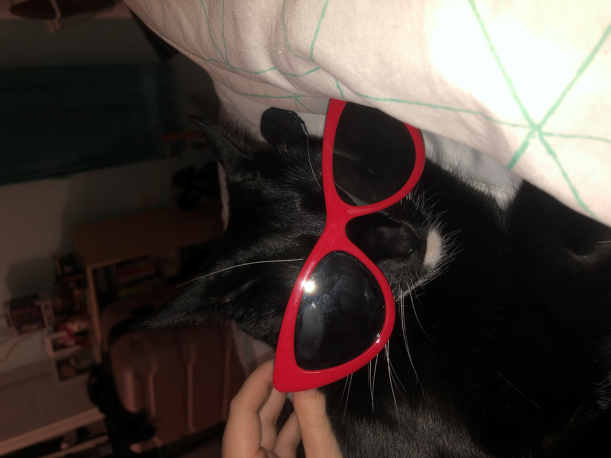
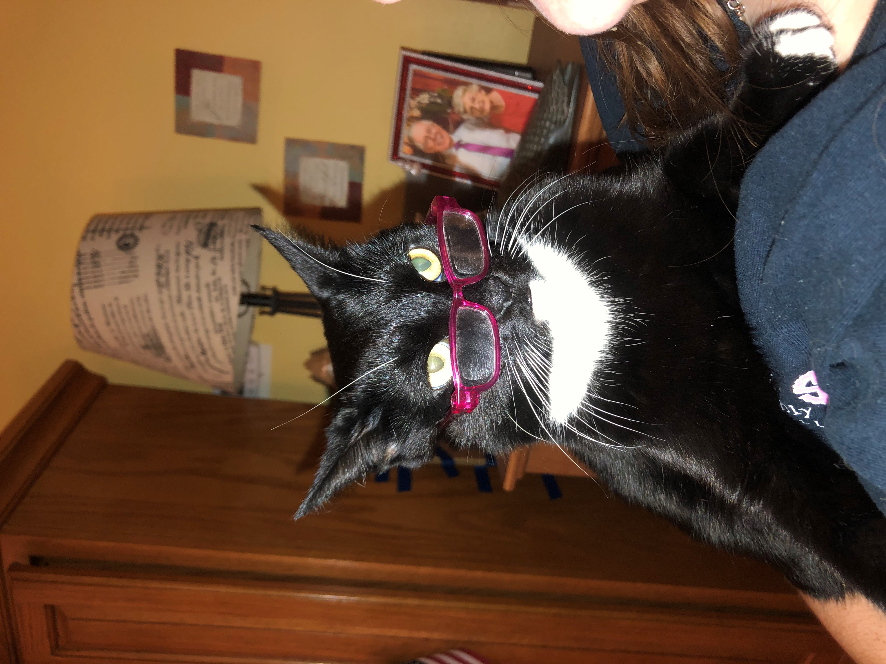

Cat has a big collection of accessories that they like to wear. The other two cats that live in the house are honestly very jealous! Apart of Cat's huge collection of human things it obviously includes their glasses collection. Cat's favorite pair of sunglasses are their bright red sunglasses. They love to wear them to the beach or to just ignore family members at Thanksgiving.
Another one of Cat's favorite glasses are their reading glasses. Believe it or not, Cat is a HUGE bookworm! Cat recently had to get reading glasses due to reading too much. Luckily Cat had the same eye prescription as my American Girl doll, so Cat just uses those. Cat's favorite book would have to be "Phantom of the Opera". Obviously Cat has seen it on Broadway, but the book has a special place in their heart. Below is Cat with their glasses.
For more of Cats adventures "click here!"